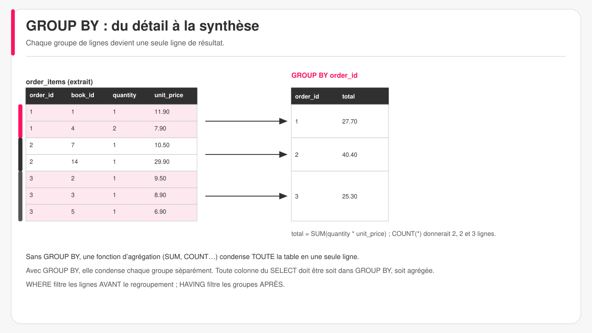
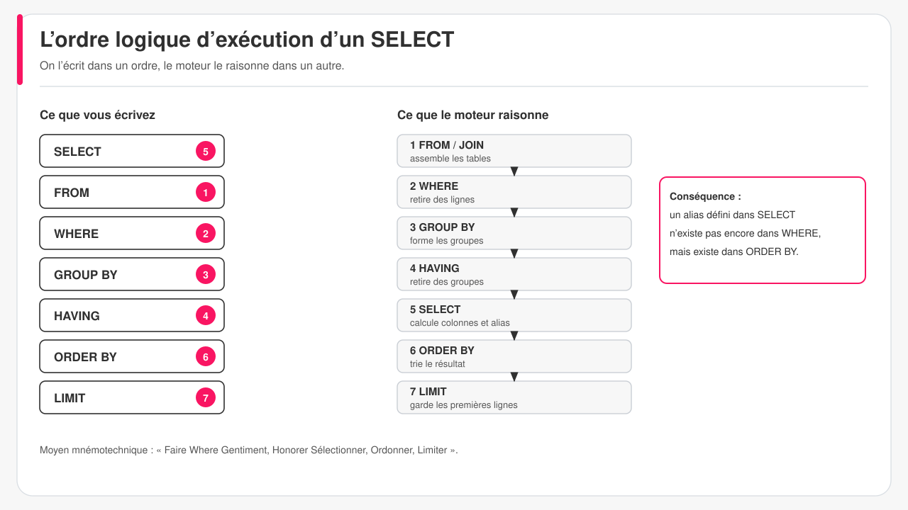

Calculer dans une requête
Un SELECT peut renvoyer des expressions : des calculs sur les colonnes (+, -, *, /). Le résultat est une colonne calculée, qui n’existe pas dans la table. Pour lui donner un nom lisible, on utilise un alias avec AS.
SELECT book_id, quantity, unit_price, quantity * unit_price AS line_total
FROM order_items
WHERE order_id = 3
ORDER BY book_id;
Résultat attendu sur le jeu de données de référence (obtenu en exécutant la requête lors de la génération du cours).
| book_id | quantity | unit_price | line_total |
|---|---|---|---|
| 2 | 1 | 9.50 | 9.50 |
| 3 | 1 | 8.90 | 8.90 |
| 5 | 1 | 6.90 | 6.90 |
line_total est le montant de chaque ligne de la commande 3. Sans AS, la colonne s’appellerait quantity * unit_price (ou un nom propre au moteur). L’alias ne vit que dans ce résultat.
Les fonctions d’agrégation
Une fonction d’agrégation condense plusieurs lignes en une valeur : on ne lit plus des lignes, on obtient une synthèse.
| Fonction | Rôle |
|---|---|
COUNT(*) |
Nombre de lignes |
COUNT(colonne) |
Nombre de lignes où la colonne n’est pas NULL |
SUM(colonne) |
Somme |
AVG(colonne) |
Moyenne |
MIN(colonne) / MAX(colonne) |
Plus petite / plus grande valeur |
SELECT MIN(unit_price) AS cheapest,
MAX(unit_price) AS most_expensive,
ROUND(AVG(unit_price), 2) AS average_price
FROM books;
Résultat attendu sur le jeu de données de référence (obtenu en exécutant la requête lors de la génération du cours).
| cheapest | most_expensive | average_price |
|---|---|---|
| 6.90 | 34.90 | 12.52 |
Une seule ligne : tout le catalogue est condensé. ROUND(x, 2) arrondit à deux décimales : c’est nécessaire pour une moyenne, qui produit sinon de longues décimales.
COUNT et NULL
Les agrégats ignorent les NULL, sauf COUNT(*).
SELECT COUNT(*) AS customers_count,
COUNT(phone) AS with_phone,
COUNT(DISTINCT city) AS distinct_cities
FROM customers;
Résultat attendu sur le jeu de données de référence (obtenu en exécutant la requête lors de la génération du cours).
| customers_count | with_phone | distinct_cities |
|---|---|---|
| 12 | 7 | 8 |
12 clients, mais seulement 7 téléphones renseignés : COUNT(phone) ne compte pas les NULL. COUNT(DISTINCT city) compte les villes différentes.
GROUP BY : une synthèse par groupe
GROUP BY forme des groupes de lignes qui partagent la même valeur, puis applique l’agrégat à chaque groupe.

SELECT category_id, COUNT(*) AS books_count
FROM books
GROUP BY category_id
ORDER BY category_id;
Résultat attendu sur le jeu de données de référence (obtenu en exécutant la requête lors de la génération du cours).
| category_id | books_count |
|---|---|
| 1 | 3 |
| 2 | 3 |
| 3 | 3 |
| 4 | 2 |
| 5 | 2 |
| 6 | 2 |
Chaque catégorie apparaît une fois, avec son nombre de livres. Les montants par commande :
SELECT order_id, ROUND(SUM(quantity * unit_price), 2) AS total
FROM order_items
GROUP BY order_id
ORDER BY order_id;
Résultat attendu sur le jeu de données de référence (obtenu en exécutant la requête lors de la génération du cours).
| order_id | total |
|---|---|
| 1 | 27.70 |
| 2 | 40.40 |
| 3 | 25.30 |
| 4 | 34.90 |
| 5 | 18.40 |
| 6 | 23.80 |
| 7 | 14.80 |
| 8 | 64.80 |
| 9 | 21.00 |
| 10 | 28.80 |
| 11 | 10.50 |
| 12 | 24.00 |
| 13 | 29.80 |
| 14 | 8.50 |
Règle d’or : toute colonne du SELECT doit être soit dans le GROUP BY, soit à l’intérieur d’un agrégat. PostgreSQL et MySQL (mode par défaut ONLY_FULL_GROUP_BY) refusent SELECT category_id, title, COUNT(*) … GROUP BY category_id : quel titre afficher pour un groupe de plusieurs livres ? SQLite, lui, accepte et choisit une valeur arbitraire, ce qui masque l’erreur. Prenez l’habitude de respecter la règle même sur SQLite.
HAVING : filtrer les groupes
WHERE agit avant le regroupement, sur les lignes ; HAVING agit après, sur les groupes (donc sur les résultats d’agrégats).
SELECT category_id, COUNT(*) AS books_count
FROM books
GROUP BY category_id
HAVING COUNT(*) >= 3
ORDER BY category_id;
Résultat attendu sur le jeu de données de référence (obtenu en exécutant la requête lors de la génération du cours).
| category_id | books_count |
|---|---|
| 1 | 3 |
| 2 | 3 |
| 3 | 3 |
Seules les catégories de trois livres ou plus. On ne peut pas écrire WHERE COUNT(*) >= 3 : à l’étape du WHERE, les groupes n’existent pas encore (voir l’ordre logique ci-dessous). Cette requête est refusée par les trois moteurs :
SELECT category_id, COUNT(*) AS books_count
FROM books
WHERE COUNT(*) >= 3
GROUP BY category_id;
Message d’erreur obtenu avec SQLite (les messages de PostgreSQL et MySQL sont rédigés autrement, mais l’instruction est aussi refusée) :
OperationalError: misuse of aggregate: COUNT()
Les deux filtres peuvent coexister : WHERE réduit les lignes, HAVING filtre les groupes obtenus.
SELECT category_id, COUNT(*) AS books_count, ROUND(AVG(unit_price), 2) AS average_price
FROM books
WHERE unit_price > 8
GROUP BY category_id
HAVING COUNT(*) >= 2
ORDER BY category_id;
Résultat attendu sur le jeu de données de référence (obtenu en exécutant la requête lors de la génération du cours).
| category_id | books_count | average_price |
|---|---|---|
| 1 | 3 | 10.43 |
| 3 | 3 | 9.63 |
| 4 | 2 | 12.75 |
| 5 | 2 | 32.40 |
Étape 1 : on retire les livres à 8 € ou moins. Étape 2 : on regroupe ce qui reste. Étape 3 : on ne garde que les groupes d’au moins deux livres.
Montants et précision
Les ordinateurs représentent mal certains décimaux avec les nombres « à virgule flottante ». C’est un problème de précision, pas une panne : ne jamais utiliser de flottants pour de l’argent.
- PostgreSQL (
NUMERIC) et MySQL (DECIMAL) calculent exactement :0.1 + 0.2 = 0.3est vrai. - SQLite peut stocker une colonne
NUMERIC(8,2)en flottant : le même test donne faux (constaté sur SQLite 3.45).
Deux précautions suivent : arrondir les sommes avec ROUND(…, 2) (c’est pourquoi toutes les requêtes monétaires du cours le font), et ne jamais comparer deux montants calculés avec = sans arrondir. Une approche plus robuste, hors périmètre, consiste à stocker des centimes entiers.
L’ordre logique : pourquoi cet interdit ?

Le moteur ne lit pas la requête de haut en bas. Il assemble d’abord les tables (FROM), retire des lignes (WHERE), forme les groupes (GROUP BY), retire des groupes (HAVING), puis seulement calcule les colonnes et leurs alias (SELECT), trie et limite. Trois conséquences :
WHEREne peut pas contenir d’agrégat : les groupes n’existent pas encore.WHEREne peut pas utiliser un alias défini dans leSELECT(il n’existe pas encore).ORDER BYpeut utiliser un alias : il s’exécute après leSELECT.
Exercices
Exercice guidé : clients ayant passé plus de trois commandes
Demande métier : « Quels clients ont passé plus de trois commandes ? » On cherche d’abord à raisonner : la table nécessaire est orders (une ligne par commande) ; on regroupe par client, on compte, on filtre le groupe.
Afficher la correction détaillée
SELECT customer_id, COUNT(*) AS orders_count
FROM orders
GROUP BY customer_id
HAVING COUNT(*) > 3;
Résultat attendu sur le jeu de données de référence (obtenu en exécutant la requête lors de la génération du cours).
| customer_id | orders_count |
|---|---|
| 1 | 4 |
GROUP BY customer_id crée un groupe par client ; COUNT(*) compte ses commandes ; HAVING COUNT(*) > 3 garde les groupes de plus de trois. Seul le client 1 répond. Pour afficher son nom, il faudra une jointure (chapitre 8). Erreur habituelle : écrire WHERE COUNT(*) > 3, refusé par le moteur.
Exercice autonome : prix par catégorie
Pour chaque catégorie, affichez le prix minimum, le prix maximum et le nombre de livres, mais seulement pour les catégories dont le prix maximum dépasse 10 €. Triez par category_id.
Afficher la correction détaillée
SELECT category_id,
MIN(unit_price) AS min_price,
MAX(unit_price) AS max_price,
COUNT(*) AS books_count
FROM books
GROUP BY category_id
HAVING MAX(unit_price) > 10
ORDER BY category_id;
Résultat attendu sur le jeu de données de référence (obtenu en exécutant la requête lors de la génération du cours).
| category_id | min_price | max_price | books_count |
|---|---|---|---|
| 1 | 8.90 | 12.90 | 3 |
| 3 | 8.50 | 10.50 | 3 |
| 4 | 11.00 | 14.50 | 2 |
| 5 | 29.90 | 34.90 | 2 |
Le filtre porte sur un résultat d’agrégat (MAX) : il va dans HAVING. Aucun filtre sur des lignes individuelles n’est demandé, donc pas de WHERE. Variante équivalente : HAVING MAX(unit_price) > 10 peut aussi s’écrire avec un alias dans certains moteurs (MySQL, SQLite), mais pas sur PostgreSQL : répétez l’expression.
Exercice de débogage : agrégat et colonne isolée
Cette requête est acceptée par SQLite mais refusée par PostgreSQL et MySQL. Pourquoi, et comment la corriger ?
SELECT category_id, title, COUNT(*) FROM books GROUP BY category_id;
Afficher la correction détaillée
title n’est ni dans le GROUP BY ni dans un agrégat : pour un groupe de plusieurs livres, le moteur ne sait pas quel titre renvoyer. PostgreSQL et MySQL le refusent ; SQLite renvoie une valeur arbitraire, ce qui est pire car l’erreur est invisible. Corrections possibles : retirer title, ou l’agréger (MIN(title)), ou grouper aussi par title (mais alors chaque groupe n’a plus qu’un livre et le comptage perd son sens).
Valider · question 1
Voir la justification de chaque réponse
- Incorrect — SELECT COUNT(*) FROM customers; : Elle compte tous les clients, y compris ceux sans téléphone.
- Bonne réponse — SELECT COUNT(phone) FROM customers; : COUNT(colonne) ignore les NULL.
- Incorrect — SELECT SUM(phone) FROM customers; : SUM additionne des nombres, pas un compteur de lignes.
Valider · question 2
Voir la justification de chaque réponse
- Incorrect — Dans WHERE : WHERE est évalué avant la formation des groupes.
- Bonne réponse — Dans HAVING : HAVING filtre les groupes après le GROUP BY.
- Incorrect — Dans ORDER BY : ORDER BY trie, il ne filtre pas.
Valider · question 3
Voir la justification de chaque réponse
- Incorrect — Parce que SQL l’exige : Aucune obligation du langage.
- Bonne réponse — Pour éviter les artefacts de calcul flottant, notamment sur SQLite : Un NUMERIC stocké en flottant peut donner 0,30000000000000004.
- Incorrect — Pour accélérer la requête : L’arrondi n’accélère rien.